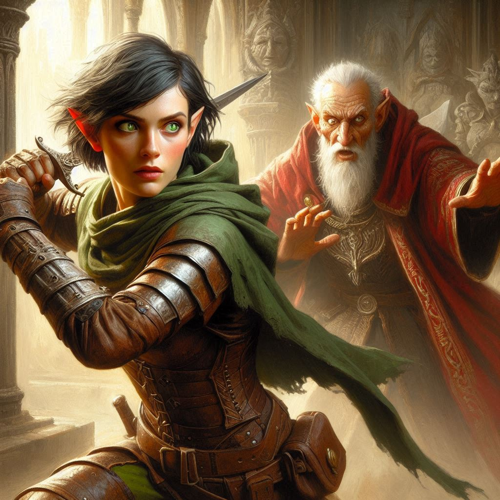
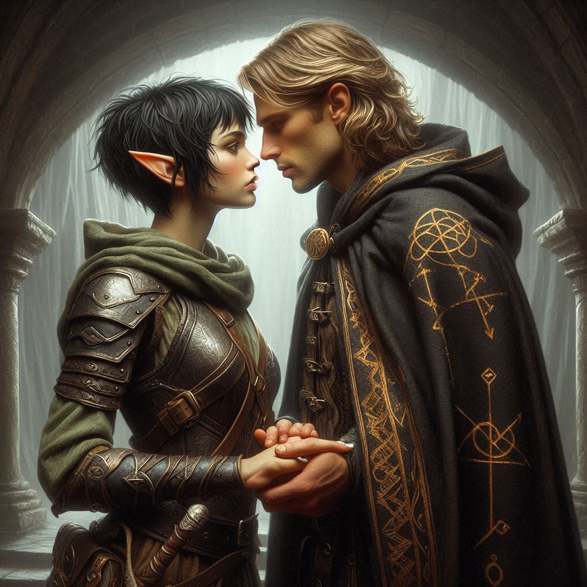

A Bond Beyond Shadows
You take a steadying breath, focusing on the word Jorsh left you: Vyrethane. Its syllables are ancient and strange, filled with a magic as old as the stars. You whisper it, and immediately, a tingling sensation rushes through you, pulling you as though caught in a river’s current. The ground under you dissolves, and the world around you blurs until only shadow remains.
Suddenly, you’re elsewhere. Cold, oppressive air fills your lungs as the landscape solidifies, revealing jagged, crumbling stone and the flickering orange light of torches lining walls of dark, twisted rock. The temple of Yaldaboath—an unholy place deep in the underworld city of Umbra’Thal. It feels both foreign and horrifyingly familiar, as if this place has always waited for you.
Ahead, the echo of clashing metal and hissing spells fills the air. You creep closer, and there, at the heart of the battle, is Jorsh. He fights fiercely, wielding dark magic against the approaching dark elves who surround him in a tightening circle. His movements are swift but strained, and you can feel the toll that magic is taking on him.
Without a second thought, you nock an arrow and release it into the fray, catching a dark elf in the shoulder just as he lunges toward Jorsh. Your arrow sinks deep, and the elf crumples. Jorsh turns at the noise, his eyes widening as he recognizes you. Relief and determination light up his face.
"Kira!" he shouts over the chaos.
You fight your way to him, the two of you moving in perfect synchrony, dispatching dark elves with swift, practiced precision. You cover each other's weaknesses seamlessly, an unspoken rhythm guiding your movements. It’s as though every choice, every arrow, every strike has led to this moment, where your combined strength pushes back the tide of shadows.
“Kira,” he gasps, clutching at a wound on his shoulder. "The dark magic—it’s consuming me. I don’t know how much longer I can hold it off.”
He looks at you, vulnerability and hope glimmering in his eyes, a plea almost unspoken. For the briefest of moments, all the bitterness and hurt from his past abandonment slips away, and you reach out, pressing a hand to his chest.
“I’m here,” you whisper. “You don’t have to do this alone, Jorsh. We can fight together.”
With a slow nod, he takes your hand, and in that moment, a warmth surges between you—a fierce, bright magic that’s raw and unyielding. It’s as if your emotions, tangled and complex, have awakened something deeper, something that begins to weave a shield around the two of you.
Just then, a portal tears open across the temple. The air grows frigid, and through the twisting darkness steps Varis, his cruel smile lit by the eerie glow of the portal. He raises a hand, crackling with dark energy, and sneers.
“I’ll end this rebellion myself,” Varis says, his voice echoing in the chamber. He hurls a bolt of dark magic straight at you and Jorsh.
But the energy collides with your shared shield, rebounding back in a blinding flash. Varis staggers, snarling in frustration, his gaze locking onto you.
In a surge of strength, Jorsh rises, his magic bolstered by your presence. He moves forward, his aura blazing with power. “Kira,” he says, his voice firm but full of emotion, “together, we can stop him.”
You squeeze his hand in agreement, and the two of you charge forward, each attack driving Varis and his dark army back. Your combined strength is unstoppable, and as Jorsh summons his remaining power, you sense a finality in the spell he casts—a spell infused with the last reserves of his life force.
Varis lets out a scream as the spell consumes him, his body and the portal crumbling away in a brilliant flash of energy. With a final shudder, the ground falls silent, and the oppressive weight of the dark temple lifts.
Exhausted, Jorsh turns to you, his strength waning. You wrap him in an embrace, feeling the warmth of his breath and the soft beat of his heart. For a moment, the shadows, the battles, all seem distant. You pull back, looking into his eyes.
“It’s over, Kira. We’ve won.” He presses his forehead to yours, and in that instant, all the hurt and separation fades as you share a kiss filled with relief, affection, and a renewed promise.
The temple crumbles around you, but you and Jorsh stand together, determined to return to Elias, Baider, and Princess Hawthorn. The Realm of Shadows may have stolen so much from both of you, but you’ve reclaimed something even stronger—a bond beyond shadows.